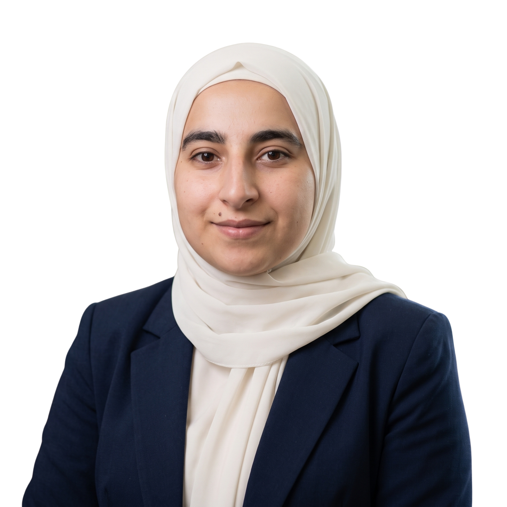

منذ نحو أربعة أشهر
مديرية إعلام القنيطرة
تعاون مهني مستقلمصمّمة مستقلة للإعلام
- إعداد تصاميم ومحتوى بصري للنشر عبر المنصات الرقمية.
- تطوير أفكار بصرية لحملات وموضوعات ذات نفع عام.
- المساهمة في تحويل الموضوعات المحلية إلى رسائل بصرية واضحة.
الإعلام الرقمي والتصميم|العمل الإنساني|هندسة البرمجيات

خريجة هندسة معلوماتية – هندسة البرمجيات من جامعة دمشق، أعمل في مجال الإعلام الرقمي والتصميم، مع خبرة في إعداد المحتوى البصري، وتنسيق المهام التقنية والإعلامية، وتنظيم المعلومات والملفات الرقمية. لديّ تجربة في العمل الإنساني والمبادرات المجتمعية، وأسعى إلى توظيف خلفيتي التقنية في تقديم محتوى واضح يخدم المؤسسات والقضايا المحلية.
منذ نحو أربعة أشهر
مديرية إعلام القنيطرة
تعاون مهني مستقلمطلع 2025 – حتى الآن
مكتب الراشدين للحج والعمرة
وظيفةمطلع 2024 – حتى نهاية 2025
Vevo Line
وظيفة1/10/2025 – 31/8/2026
مؤسسة أثر للتنمية والتطوير
عمل إنسانيمشروع «سبل العيش وتمكين الأشخاص ذوي الإعاقة» — الشركاء: مؤسسة أثر للتنمية والتطوير، Première Urgence Internationale (PUI)، وبرنامج الأمم المتحدة الإنمائي (UNDP)، بدعم تمويلي فنلندي.
مشرفة فريق ترويج: شباط 2022 – أيلول 2024
باحثة سوق: شباط 2022 – أيلول 2023
تطوع · ثلاث سنوات
شاركت في إعداد وكتابة مواد المحاضرات الجامعية.
العمل على تقارير المشاريع والملفات التقنية والإعلامية وتنظيم الملفات الرقمية.
جامعة دمشق · تشرين الأول 2019 – 2025 · المعدل 73%
اللغات: العربية (أصلية)، الإنكليزية (Intermediate).
أعمال التصميم: https://drive.google.com/drive/folders/12mAwkRwQ0FwnwwYz8xMDBKlGMuOega3Y